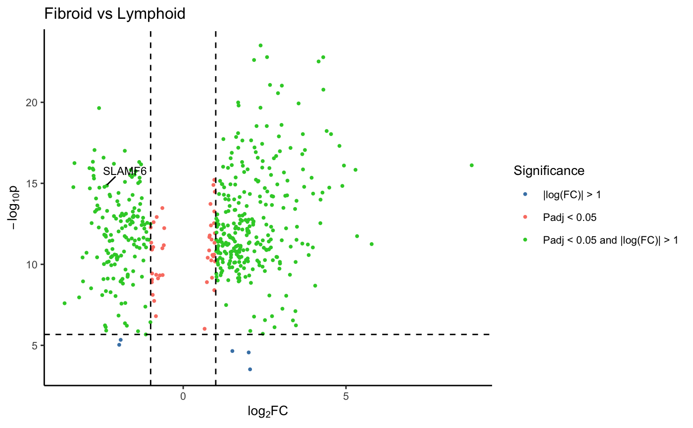

This function creates a volcano plot for one comparison group
volcano_plot( pvalues_df, comparison, p_cutoff = 0.05, fc_cutoff = 1, label_rows = NULL, p_col_suffix = "pvalue", padj_col_suffix = "padj", fc_col_suffix = "logFC", label_col = "label", label_size = 3, text_size = 10, marker_size = 0.7, shared_legend_size = 1, sig_names = NULL, colours = c("grey60", "salmon", "steelblue", "limegreen"), fc_line = TRUE, p_line = TRUE, line_colours = c("black", "black") )
| pvalues_df | The pvalues data frame. This must contain a pvalue, padj, and logFC column as well as a label column. |
|---|---|
| comparison | The comparison (column_prefix) to use. |
| p_cutoff | The cut-off for pvalue significance (default = 0.05). |
| fc_cutoff | The cut-off for fold change significance (default = 1). |
| label_rows | Row numbers or names of values to be annotated/labelled (default = NULL). |
| p_col_suffix | The suffix word to define columns containing p values (default = 'pvalues'). |
| padj_col_suffix | The suffix word to define columns containing adjusted
p values (default = 'padj'). If NULL these will be calculated using
|
| fc_col_suffix | The optional suffix word to define columns containing log fold change values (default = 'logFC'). |
| label_col | Optional column name in 'pvalues_df' for labelling markers. If NULL the rownames of pvalues are used. |
| label_size | The font size of labels (default = 3) |
| text_size | The font size of text (default = 10) |
| marker_size | The size of markers (default = 0.7) |
| shared_legend_size | The size for the legend (default = 1). |
| sig_names | A character vector of labels to be used for:
non-significant; adjusted p < p_cutoff; |Fold Change| > fc_cutoff; and
finally adjusted p < p_cutoff.
If NULL c('Not Significant', |
| colours | A character vector of colours to be used for non-significant; adjusted p < p_cutoff; |Fold Change| >, fc_cutoff; and adjusted p < p_cutoff. default = p_cutoff & |Fold Change| > fc_cutoff markers respectively (default = c('grey60', 'salmon', 'steelblue', 'limegreen')). |
| fc_line | Logical whether to add vertical dashed line at fc_cutoff (default = TRUE). |
| p_line | Logical whether to add horizontal dashed line at p_cutoff (default = TRUE). |
| line_colours | A character vector stating the colour of lines to be used for fc_line and p_line respectively (default = c('black', 'black')). |
Returns a single volcano plot.
Lewis, Myles J., et al. (2019). Molecular portraits of early rheumatoid arthritis identify clinical and treatment response phenotypes. Cell reports, 28:9
data("example_data") volcano_plot(syn_example_p, "Fibroid_Lymphoid", label_col = "Gene", label_rows=c("SLAMF6"), fc_col_suffix="log2FoldChange")